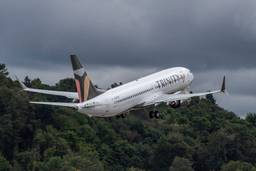
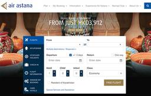
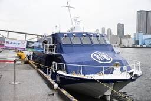
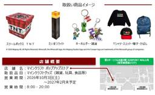
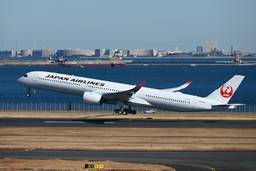
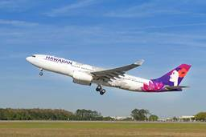

TRAICY（トライシー）
https://www.traicy.com/
TRAICY（トライシー）は、航空・LCC・鉄道・ホテル・ゲストハウス・バックパッカーズの最新情報を発信している、日本最大級のトラベルメディアです。
フィード
香港エクスプレス航空、機内食を刷新 「蓮香楼」の点心を提供
TRAICY（トライシー）
香港エクスプレス航空は、10月25日から新しい機内食メニューの提供を開始する。 香港の点心専門店「蓮香楼（Lin Heung Lau）」と提携した点心の盛り合わせは、ビーフ焼売、蟹の卵入り豚肉焼売、蓮の葉で包んだちまき、 […]投稿 香港エクスプレス航空、機内食を刷新 「蓮香楼」の点心を提供 は TRAICY（トライシー） に最初に表示されました。
12時間前
ジンエアー、ソウル往復航空券を最大3,000円割引 10月の金〜日曜限定
TRAICY（トライシー）
ジンエアーは、日本発ソウル/仁川行きを対象としたプロモーションを10月2日から25日までの金〜日曜に開催する。 往復運賃が3,000円、片道運賃が1,500円割引となるクーポンを配布する。搭乗期間は10月25日から12月 […]投稿 ジンエアー、ソウル往復航空券を最大3,000円割引 10月の金〜日曜限定 は TRAICY（トライシー） に最初に表示されました。
14時間前
タイガーエア・台湾、乗り継ぎ予約サービス「tigerhop」を開始 スクートと連携
TRAICY（トライシー）
タイガーエア・台湾は、トラベルテック企業のDohopと航空会社間の乗り継ぎ予約プラットフォーム「虎里転（tigerhop）」の運用を開始した。 プラットフォームにはDohopの「RetailConnect」を採用した。従 […]投稿 タイガーエア・台湾、乗り継ぎ予約サービス「tigerhop」を開始 スクートと連携 は TRAICY（トライシー） に最初に表示されました。
14時間前
シンガポール航空、「SQワンダーラスト ゆとり割」開催 会員限定で最大12％オフ
TRAICY（トライシー）
シンガポール航空は、「SQワンダーラスト ゆとり割」を10月1日午前10時から12日まで開催している。 クリスフライヤー会員限定で、Mastercardでの支払いにより人気7都市への往復航空券が最大12％オフとなる。公式 […]投稿 シンガポール航空、「SQワンダーラスト ゆとり割」開催 会員限定で最大12％オフ は TRAICY（トライシー） に最初に表示されました。
14時間前
モッピー、JALマイルに80％のレートで交換できる「ドリームキャンペーン」開催 12月28日まで
TRAICY（トライシー）
セレスは、ポイントサイト「moppy（モッピー）」で展開している、JALマイレージバンクのマイルに実質80％のレートで交換できる「ドリームキャンペーン」を10月1日正午から12月28日午後2時59分まで開催する。 条件を […]投稿 モッピー、JALマイルに80％のレートで交換できる「ドリームキャンペーン」開催 12月28日まで は TRAICY（トライシー） に最初に表示されました。
14時間前
チャイナエアライン、丸福珈琲店監修機内食を12月末まで継続 新メニューも追加
TRAICY（トライシー）
チャイナエアラインは、大阪/関西〜台北/桃園・高雄線で提供している「丸福珈琲店」監修の機内食の提供期間を12月31日まで延長する。 大阪/関西〜台北/桃園線の就航20周年を記念し、丸福珈琲店と連携した特別メニューを7月か […]投稿 チャイナエアライン、丸福珈琲店監修機内食を12月末まで継続 新メニューも追加 は TRAICY（トライシー） に最初に表示されました。
15時間前
ZIPAIR、「THANKS SALE」開催 ソウル行き片道9,000円から
TRAICY（トライシー）
ZIPAIR Tokyoは、「THANKS SALE」を9月29日から10月5日まで開催している。北米行きは9月30日から発売している。 設定路線と片道最低運賃は以下の通り。燃油サーチャージなし、諸税別。 搭乗期間はアジ […]投稿 ZIPAIR、「THANKS SALE」開催 ソウル行き片道9,000円から は TRAICY（トライシー） に最初に表示されました。
16時間前
タイ国際航空、全便の運航再開
TRAICY（トライシー）
タイ国際航空は、きょう10月3日から全便の運航を再開する。 9月24日以降、バンコクで発生した大雨の影響による洪水で、グランドハンドリングスタッフなどが出勤できなくなり、運航へ大きな影響が発生した。報道などによると、積み […]投稿 タイ国際航空、全便の運航再開 は TRAICY（トライシー） に最初に表示されました。
16時間前

トリニティ航空、日韓線でセール開催 ソウル行き片道総額16,050円から
TRAICY（トライシー）
トリニティ航空は、日韓線を対象としたセールを10月1日から15日まで開催している。 対象路線と片道最低運賃は以下の通り。燃油サーチャージと諸税は含まれている。搭乗期間は10月1日から2027年3月27日までで、路線により […]投稿 トリニティ航空、日韓線でセール開催 ソウル行き片道総額16,050円から は TRAICY（トライシー） に最初に表示されました。
17時間前
東海汽船、3隻使用停止 「おがさわら丸」など代替船運航
TRAICY（トライシー）
東海汽船は、国土交通省から一部船舶の使用停止命令を受けたことに伴い、代替運航を実施すると発表した。 使用停止となるのは、「橘丸」と「セブンアイランド結」、「セブンアイランド友」の3隻。期間は10月9日から28日までの20 […]投稿 東海汽船、3隻使用停止 「おがさわら丸」など代替船運航 は TRAICY（トライシー） に最初に表示されました。
18時間前

エア・アスタナ、東京/成田〜アルマトイ線を新規就航 11月30日から週2往復
TRAICY（トライシー）
エア・アスタナは、東京/成田〜アルマトイ線を11月30日に新規就航する。 月・木曜の週2往復を運航する。機材はエアバスA321LR型機（ビジネスクラス16席、エコノミークラス150席）を使用する。所要時間は東京/成田発が […]投稿 エア・アスタナ、東京/成田〜アルマトイ線を新規就航 11月30日から週2往復 は TRAICY（トライシー） に最初に表示されました。
1日前

国土交通省、東海汽船に20日間の船舶使用停止命令 1
1
TRAICY（トライシー）
国土交通省は、東海汽船に対し、海上運送法第17条の規定に基づく船舶の使用停止命令を発出した。 1月以降、東海汽船と所有する船舶に対して実施した検査で、海上運送法に基づき定めた安全管理規程を遵守していないなど、海上運送法に […]投稿 国土交通省、東海汽船に20日間の船舶使用停止命令 は TRAICY（トライシー） に最初に表示されました。
1日前

成田空港T2に「マインクラフト」ポップアップストア、10月3日開業
TRAICY（トライシー）
成田国際空港第2ターミナルに、「マインクラフト ポップアップストア」が10月3日にオープンする。 ブロックで世界を作り、冒険や建築を楽しむゲーム「マインクラフト」の期間限定店で、成田空港への出店は初めて。クリーパーやTN […]投稿 成田空港T2に「マインクラフト」ポップアップストア、10月3日開業 は TRAICY（トライシー） に最初に表示されました。
1日前
アメックス、マリオット提携カードの入会で最大10万ポイント 10月5日まで
TRAICY（トライシー）
アメリカン・エキスプレスとマリオット・インターナショナルは、提携カード2券種への入会でボーナスポイント付与する入会キャンペーンを10月5日まで実施している。 「Marriott Bonvoy アメリカン・エキスプレス・プ […]投稿 アメックス、マリオット提携カードの入会で最大10万ポイント 10月5日まで は TRAICY（トライシー） に最初に表示されました。
1日前
モッピー、ANAマイル交換レートが実質60％となるキャンペーン実施 12月28日まで
TRAICY（トライシー）
セレスは、ポイントサイト「moppy（モッピー）」で展開している、「ANAブーストキャンペーン」を10月1日正午から12月28日午後2時59分まで実施する。 1回の交換で21,000ポイントをANAの6,000マイルに交 […]投稿 モッピー、ANAマイル交換レートが実質60％となるキャンペーン実施 12月28日まで は TRAICY（トライシー） に最初に表示されました。
1日前
東海道・山陽新幹線、年末年始に「EX早特☆期間限定セール！」 東京〜広島間が15,000円
TRAICY（トライシー）
JR東海とJR西日本は、東海道・山陽新幹線の「エクスプレス予約」「スマートEX」で、年末年始の一部乗車日・方面を対象に「EX早特☆期間限定セール！」を実施する。 対象は、東京・品川・新横浜と名古屋・京都・新大阪・岡山・広 […]投稿 東海道・山陽新幹線、年末年始に「EX早特☆期間限定セール！」 東京〜広島間が15,000円 は TRAICY（トライシー） に最初に表示されました。
1日前
エミレーツ航空、フライドバイとのテルアビブ発着便のコードシェアを停止
TRAICY（トライシー）
エミレーツ航空は、フライドバイとの共同運航（コードシェア）によるテルアビブ発着便の運航を即時停止した。再開時期は未定としている。 最終目的地がテルアビブとなる乗客は、出発地での搭乗を受け付けない。すでにテルアビブへ向かっ […]投稿 エミレーツ航空、フライドバイとのテルアビブ発着便のコードシェアを停止 は TRAICY（トライシー） に最初に表示されました。
1日前
カンドゥー幕張に「アパホテル」のパビリオンが登場 ホテルの仕事を体験
TRAICY（トライシー）
イオンモール幕張新都心内のこども向け職業体験施設「カンドゥー幕張」に、アパホテルのパビリオンが10月2日にオープンした。同日、オープニングイベントが開催された。 パビリオンは、実際のホテルを模したオレンジの外観で、ホテル […]投稿 カンドゥー幕張に「アパホテル」のパビリオンが登場 ホテルの仕事を体験 は TRAICY（トライシー） に最初に表示されました。
1日前
カンタス航空、日本・韓国地区支社長にクロヴィス・ペリエ氏が就任
TRAICY（トライシー）
カンタス航空は、クロヴィス・ペリエ氏が日本・韓国地区支社長に就任したと発表した。 東京を拠点とし、アジア地区上級副社長のニック・マッグリン氏のもとで、日本・韓国市場の事業戦略、営業活動、業界パートナーや政府機関との関係強 […]投稿 カンタス航空、日本・韓国地区支社長にクロヴィス・ペリエ氏が就任 は TRAICY（トライシー） に最初に表示されました。
2日前

JAL、国内線でタイムセール 12月〜1月搭乗分対象、JMB会員先行予約も
TRAICY（トライシー）
日本航空（JAL）は、「国内線タイムセール」を10月6日から7日まで開催する。 片道最低運賃は、東京/羽田〜大阪/伊丹線が9,460円、東京/羽田〜札幌/千歳線が11,000円、東京/羽田〜沖縄/那覇線が11,440円、 […]投稿 JAL、国内線でタイムセール 12月〜1月搭乗分対象、JMB会員先行予約も は TRAICY（トライシー） に最初に表示されました。
2日前
ハワイアン航空、ホノルル〜カフルイ線にボーイング737-800型機投入 10月3日から
TRAICY（トライシー）
ハワイアン航空は、ホノルル〜カフルイ線にボーイング737−800型機を、10月3日から投入する。 運航するのはアラスカ航空塗装の機材で、1日3往復を運航する。ボーイング717型機の置き換えの一環で、離島路線の輸送力を補完 […]投稿 ハワイアン航空、ホノルル〜カフルイ線にボーイング737-800型機投入 10月3日から は TRAICY（トライシー） に最初に表示されました。
2日前
JR西日本、WESTERポイント関西・北陸フリーパス発売 6,000ポイントで3日間乗り放題
TRAICY（トライシー）
JR西日本は、「WESTERポイント関西・北陸フリーパス」を発売する。 北陸新幹線の敦賀～糸魚川駅間と特急「サンダーバード」の大阪～敦賀駅間、特急「しらさぎ」の米原～敦賀駅間と、大阪・京都・滋賀を中心とした在来線普通列車 […]投稿 JR西日本、WESTERポイント関西・北陸フリーパス発売 6,000ポイントで3日間乗り放題 は TRAICY（トライシー） に最初に表示されました。
2日前
ロイヤル・カリビアン、来春に日本発着クルーズ 「ボイジャー・オブ・ザ・シーズ」で12年ぶり運航
TRAICY（トライシー）
ロイヤル・カリビアン・インターナショナルは、2028年3月から4月にかけて、「ボイジャー・オブ・ザ・シーズ」による日本発着クルーズを運航する。 横浜発着のコースは、3月10日出発の「九州・済州島・清水クルーズ」（11泊1 […]投稿 ロイヤル・カリビアン、来春に日本発着クルーズ 「ボイジャー・オブ・ザ・シーズ」で12年ぶり運航 は TRAICY（トライシー） に最初に表示されました。
2日前
楽天ペイ、札幌市で最大20％還元キャンペーン 楽天トラベルでの宿泊が条件
TRAICY（トライシー）
楽天ペイメントは、北海道札幌市で「札幌市でお得に宿泊＆お買い物！最大20％還元キャンペーン」を、10月1日から11月30日まで実施する。 楽天トラベルで札幌市の対象施設を1部屋あたり30,000円以上（税込）で予約し、キ […]投稿 楽天ペイ、札幌市で最大20％還元キャンペーン 楽天トラベルでの宿泊が条件 は TRAICY（トライシー） に最初に表示されました。
2日前
東海道新幹線に23年ぶり個室復活 「Supreme Class」、東京〜新大阪6万円超の価値は？
TRAICY（トライシー）
東海道・山陽新幹線のN700Sに10月1日、新たな最上位クラス「Supreme Class（スプリームクラス）」が導入された。グリーン車よりもさらに上位に位置付ける、扉付きの完全個室だ。 東海道新幹線では、かつて100系 […]投稿 東海道新幹線に23年ぶり個室復活 「Supreme Class」、東京〜新大阪6万円超の価値は？ は TRAICY（トライシー） に最初に表示されました。
2日前
パナソニック・アビオニクス、「Astrova」がEyesafe認証を取得 IFEで初
TRAICY（トライシー）
パナソニック・アビオニクスは、機内エンターテインメント（IFE）ソリューション「Astrova」の4K OLEDスクリーン全製品群が、Eyesafeディスプレイ要件3.0認証を取得したと発表した。 Eyesafeディスプ […]投稿 パナソニック・アビオニクス、「Astrova」がEyesafe認証を取得 IFEで初 は TRAICY（トライシー） に最初に表示されました。
2日前

ハワイアン航空、ホノルルの国際線チェックインカウンターをT2に集約へ 10月3日から
TRAICY（トライシー）
ハワイアン航空は、ホノルルのダニエル・K・イノウエ国際空港のチェックインカウンターを10月3日から再編する。 現在の国際線チェックインカウンターは、日本行きのみターミナル2ロビー4で、それ以外はターミナル1となっている。 […]投稿 ハワイアン航空、ホノルルの国際線チェックインカウンターをT2に集約へ 10月3日から は TRAICY（トライシー） に最初に表示されました。
2日前
エア・ドゥ、ディスカウントマイルキャンペーンを全路線で実施 東京/羽田～旭川線が3,000マイルなど
TRAICY（トライシー）
AIRDO（エア・ドゥ）は、ディスカウントマイルキャンペーン「Enjoy your flight with mile」を開催する。 対象は全路線で、搭乗期間はを9月30日から12月17日までと2027年1月5日から1月3 […]投稿 エア・ドゥ、ディスカウントマイルキャンペーンを全路線で実施 東京/羽田～旭川線が3,000マイルなど は TRAICY（トライシー） に最初に表示されました。
2日前
HIS、「九州ふっこう応援割」を10月2日正午販売開始 宮崎・福岡・佐賀・長崎県対象
TRAICY（トライシー）
エイチ・アイ・エス（HIS）は、旅行支援「九州ふっこう応援割」の宮崎県・福岡県・佐賀県・長崎県の販売を、10月2日正午から開始する。 販売対象は航空券と宿泊がセットになった対象ツアーのみとなり、クーポンコードを入力する必 […]投稿 HIS、「九州ふっこう応援割」を10月2日正午販売開始 宮崎・福岡・佐賀・長崎県対象 は TRAICY（トライシー） に最初に表示されました。
2日前

ANA X、「九州ふっこう応援割」を10月2日午後2時販売開始 長崎県対象
TRAICY（トライシー）
ANA Xは、旅行支援「九州ふっこう応援割」の長崎県の販売を、10月2日午後2時から開始する。 販売対象は航空券と宿泊がセットになったダイナミックパッケージのみで、2泊以上の場合には同一県内に宿泊する必要がある。宿泊期間 […]投稿 ANA X、「九州ふっこう応援割」を10月2日午後2時販売開始 長崎県対象 は TRAICY（トライシー） に最初に表示されました。
2日前